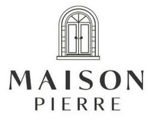

Trade Mark Journal No.2026/007 13 February 2026
UK00004331515 28 January 2026 (29,30,32,33,35,43)

- Class 29
- Meat, fish, poultry and game; meat extracts; preserved, frozen, dried and cooked fruits and vegetables; jellies, jams, compotes; eggs, milk and milk products; edible oils and fats; prepared meals included in this class; soups and potato crisps.
- Class 30
- Coffee, tea, cocoa, sugar, rice, tapioca, sago, artificial coffee; flour and preparations made from cereals, bread, pastry and confectionery, ices; honey, treacle; yeast, baking-powder; salt, mustard; vinegar, sauces (condiments); spices; ice; sandwiches; prepared meals included in this class; pizzas, pies and pasta dishes; fruit sauces.
- Class 32
- Non-alcoholic drinks; Cider, non-alcoholic; Non-alcoholic beer; Non-alcoholic cocktails; Non-alcoholic wine; Non-alcoholic cordials; Non-alcoholic punch; Non alcoholic aperitifs; Craft beer; Wheat beer; Flavored beer; Ginger beer; Low-alcohol beer; Beer; Imitation beer; Beer-based cocktails; Alcohol-free beers; Lager; Fruit drinks; Fruit juices.
- Class 33
- Mulled wine; Sparkling wine; Fruit wine; Red wine; White wine; Sweet wine; Aperitif wines; Low-alcoholic wine; Still wine; Beverages containing wine [spritzers]; Dessert wines; Wine; Rose wines; Table wines; Spirits; Gin; Vodka; Rum; Liqueurs; Malt whisky; Alcoholic cocktails; Prepared alcoholic cocktails; Alcoholic cocktail mixes; Alcoholic aperitifs; Low alcoholic drinks; Alcoholic beverages except beers; Prepared wine cocktails; Cocktails; Alcoholic punches; Cider; Whiskey.
- Class 35
- Loyalty scheme services; Administration of loyalty programs involving discounts or incentives; Organisation, operation and supervision of loyalty schemes and incentive schemes; Customer loyalty services for commercial, promotional and/or advertising purposes.
- Class 43
- Services for providing food and drink; temporary accommodation; restaurant, bar and catering services; provision of holiday accommodation; booking and reservation services for restaurants and holiday accommodation; retirement home services; creche services.
CHERRY TWO LTD
Representative: Fosters Solicitors LLP